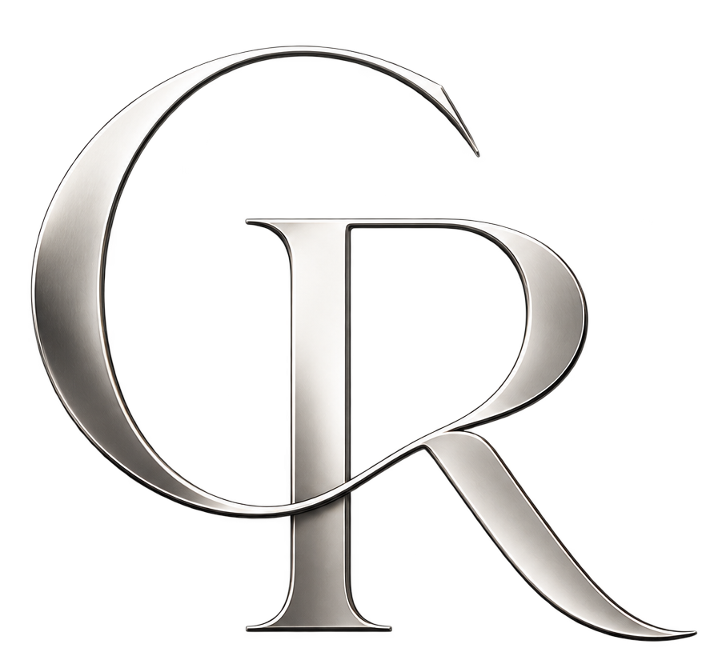
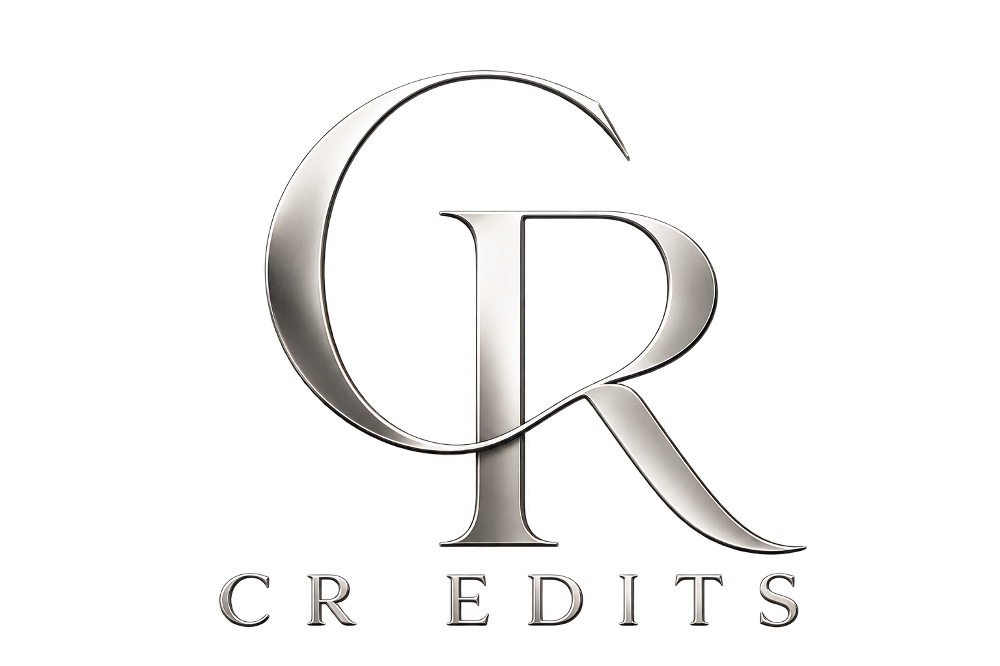
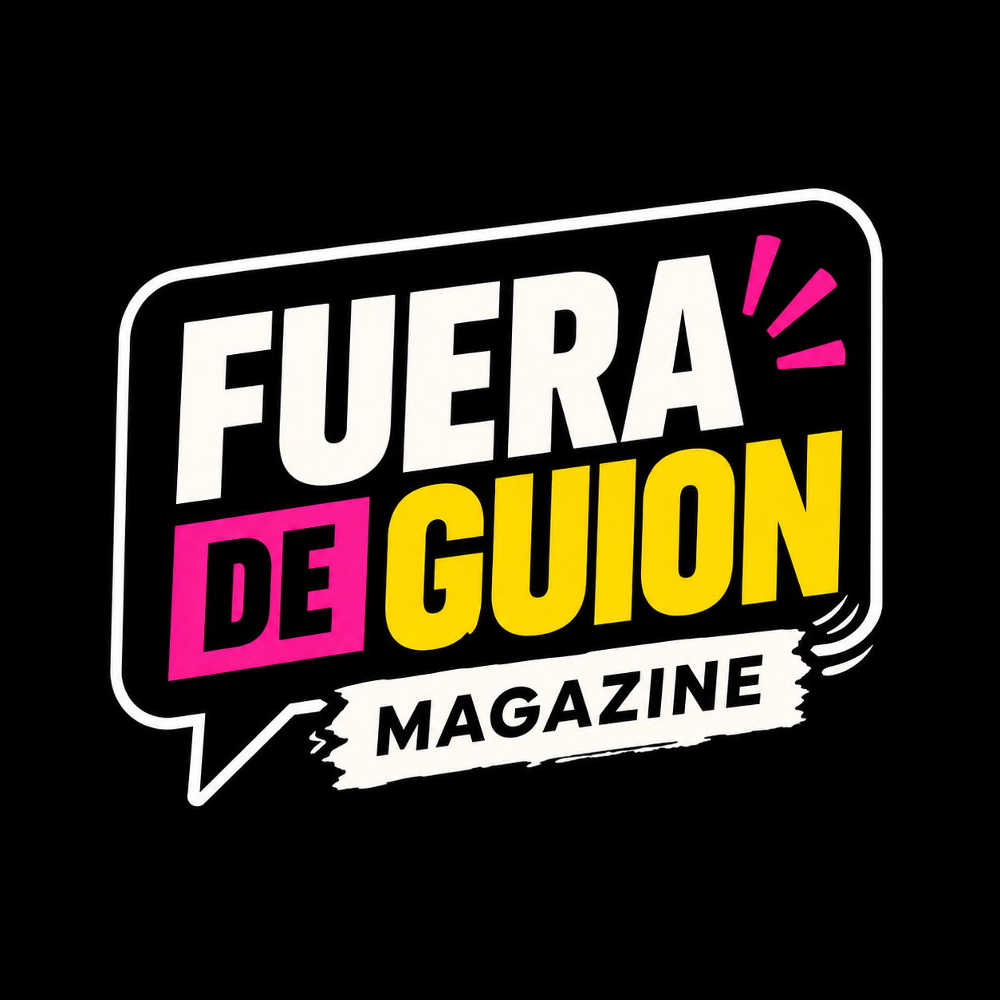
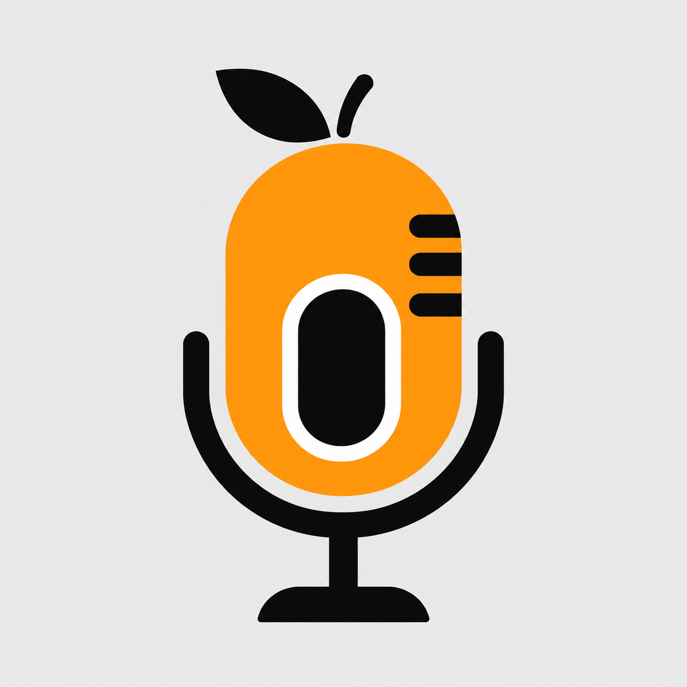
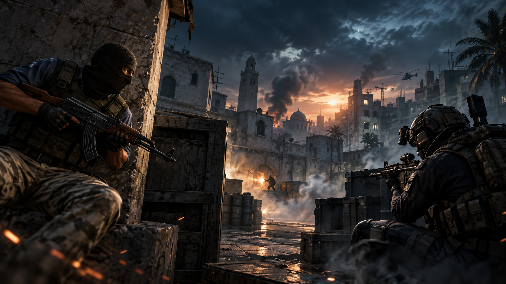
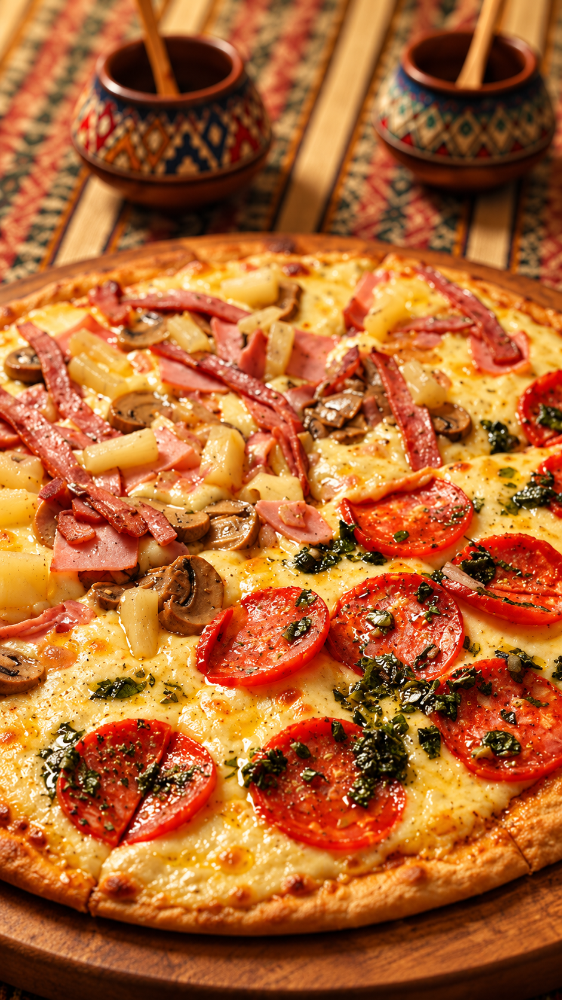
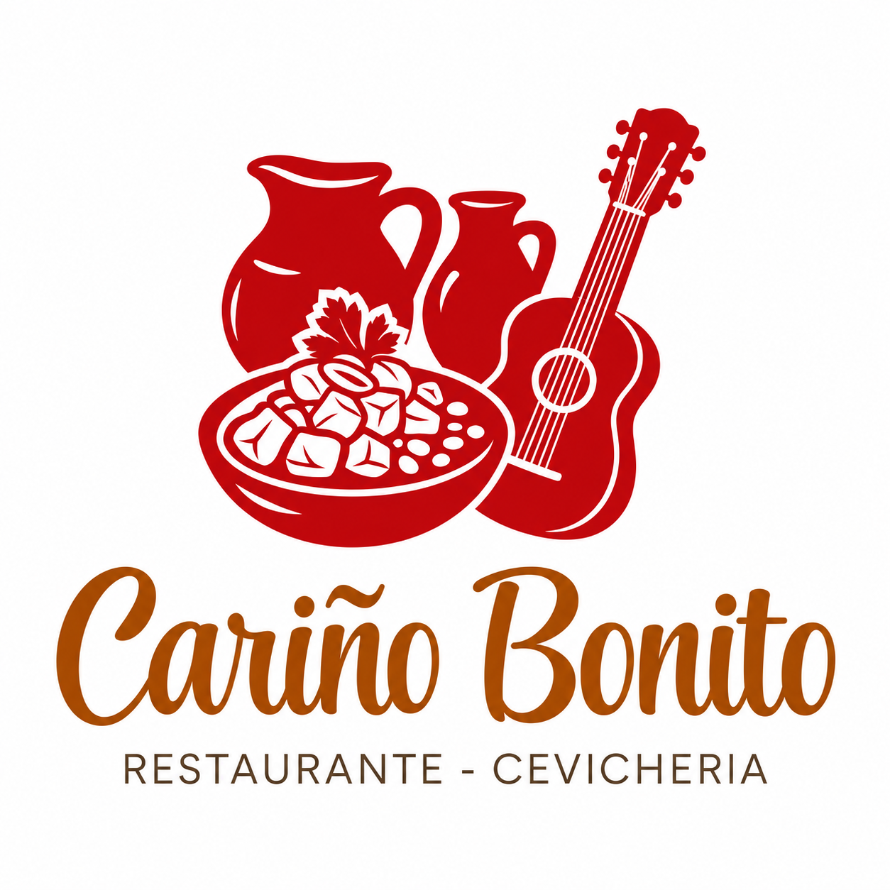
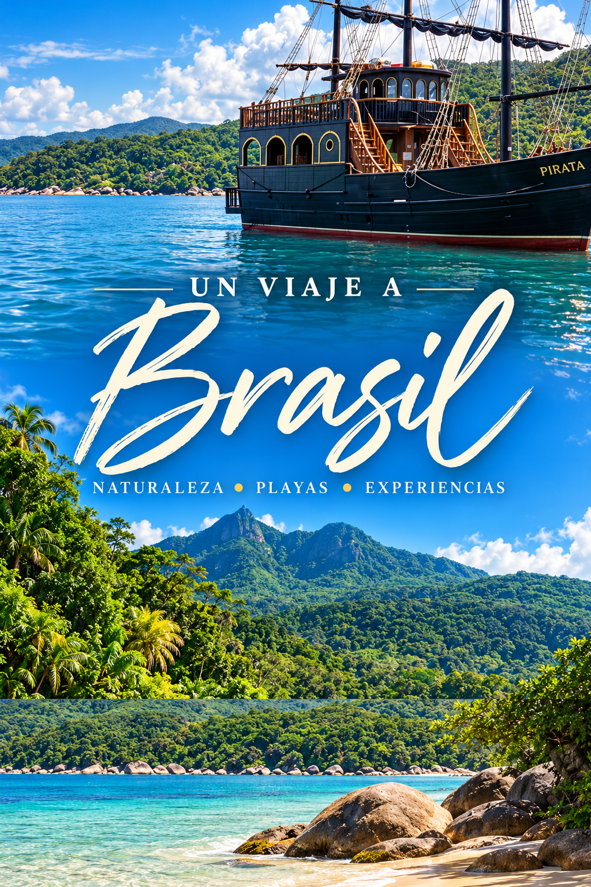
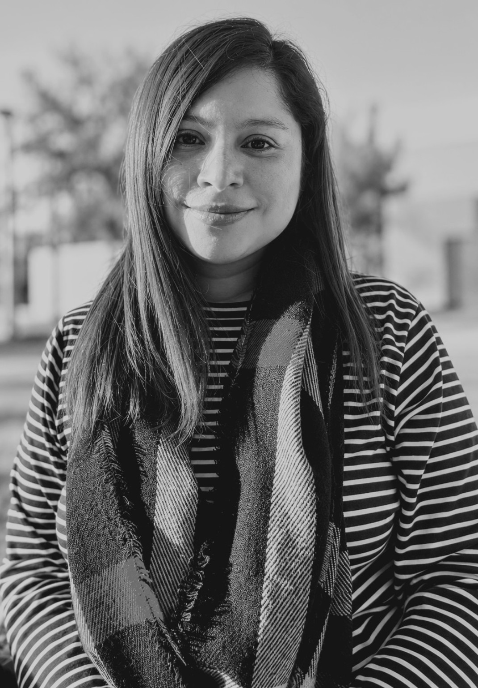
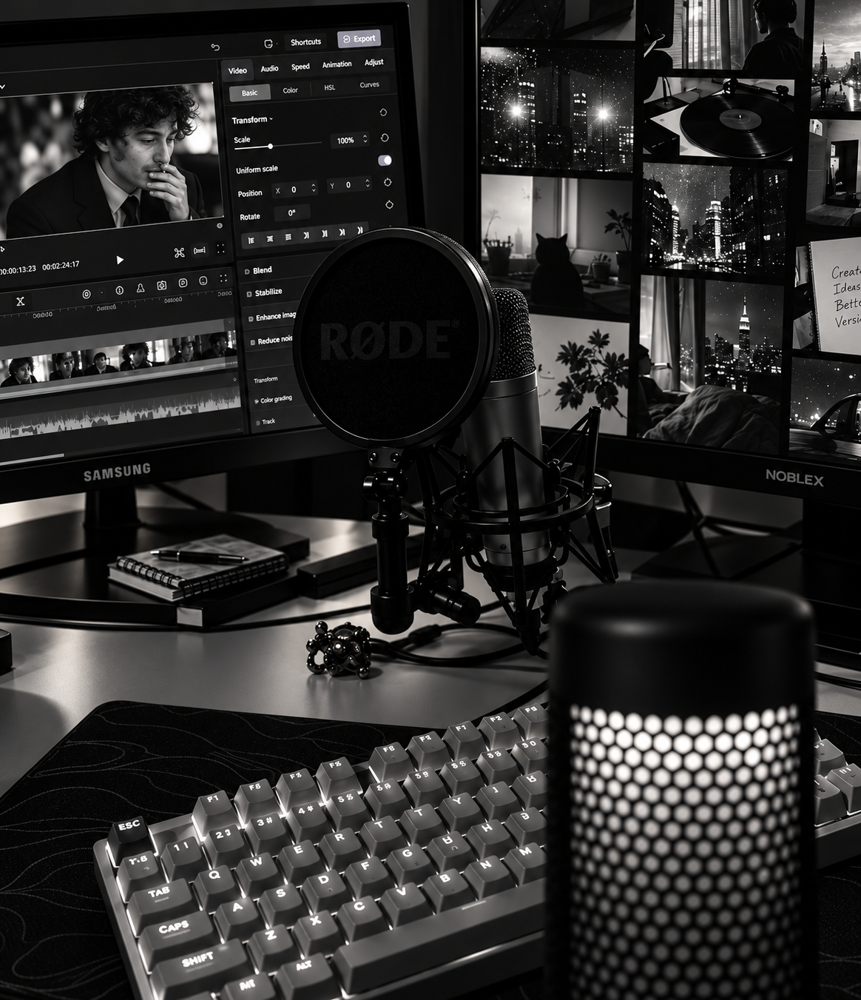

REDES
Reels, TikTok & Shorts
Clips verticales con cortes dinámicos, subtítulos, música, recursos visuales y hooks claros.

VIDEO EDITOR · CONTENIDO DIGITAL
Transformo material crudo en piezas ágiles, prolijas y pensadas para redes, streams y YouTube. Ritmo, subtítulos, sonido y una estética que acompaña tu identidad.
Disponible para proyectos freelance

¿QUÉ NECESITÁS?
Cada formato pide un ritmo distinto. La edición se adapta al contenido, no al revés.
REDES
Clips verticales con cortes dinámicos, subtítulos, música, recursos visuales y hooks claros.
STREAMS
Selección de momentos, montaje de gameplay, memes, zooms y ritmo para retención.
FORMATO LARGO
Edición narrativa, limpieza de pausas, B-roll, títulos, sonido y continuidad visual.
TRABAJOS
Acá vas a encontrar distintos tipos de contenido: reels, videos para redes, highlights de stream y piezas pensadas según el objetivo de cada proyecto.
Proyecto para redes sociales de un viaje por las cataratas del Iguazú.

Proyecto para redes sociales de un programa de entrevistas.

Proyecto para redes sociales de un canal de streaming.

Proyecto para redes sociales de un video documental sobre la historia del icónico juego.

Proyecto para redes sociales de una pizzería local.

Proyecto para redes sociales de un restaurante local.

Proyecto para redes sociales de un viaje por Brasil.


SOBRE MÍ
Soy Camila, editora de video autodidacta. Me gusta agarrar material en bruto y encontrarle el ritmo: qué cortar, qué dejar respirar y qué recurso suma de verdad.
Trabajo principalmente con contenido para redes, streams, gaming, gastronomía, eventos y formatos de YouTube.
CÓMO TRABAJO
Reviso objetivo, formato, referencias y qué querés transmitir.
Selecciono, corto, ritmo, subtítulos, sonido y recursos necesarios.
Revisamos detalles y dejo la pieza lista para publicar.
CONTACTO
Contame qué estás haciendo y vemos cómo llevarlo a una pieza que funcione.